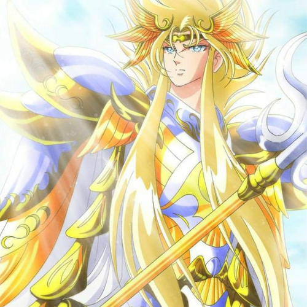
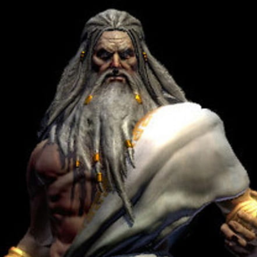
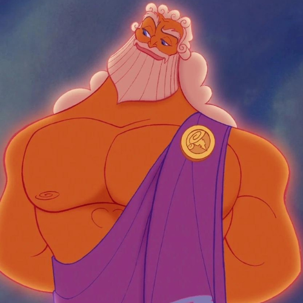

Como poderam ver, esse site é sobre o deus grego Zeus, considerado por muitos o deus grego mais famoso de todos. Não é tão exagero galera, afinal, até nas próprias histórias da mitologia ele é o mais falado entre as outras divindades. Dito essas coisas, vamos então conhecer essa celebridade divina!
Resumindo Zeus
1. Zeus é uma figura importante da mitologia grega, sendo considerado o deus supremo do panteão olímpico.
2. Ele é conhecido como o pai dos deuses e dos homens, governando o céu e controlando o trovão e os relâmpagos.
3. Nas histórias mitológicas, Zeus é retratado como um deus poderoso, frequentemente representado como um homem maduro, com barba e cabelos longos, segurando um raio.
4. Ele nasceu na ilha de Creta e é filho de Cronos e Reia. Na mitologia, Zeus liderou uma revolta contra seu pai e os titãs, conquistando a vitória e se tornando o novo governante do mundo.
5. Zeus era casado com sua irmã Hera, que também era uma deusa. No entanto, ele teve muitos relacionamentos amorosos com outras deusas, mortais e criaturas mitológicas, resultando em muitos filhos.
6. Além de ser associado ao trovão, Zeus também tinha influência sobre fenômenos naturais como tempestades, chuvas e terremotos.
7. Ele era reverenciado pelos antigos gregos como um dos deuses mais importantes e muitos templos foram construídos em sua homenagem em várias cidades.
8. Os gregos realizavam festivais e rituais para celebrar Zeus, sendo o mais famoso deles os Jogos Olímpicos, que eram realizados a cada quatro anos em Olímpia.
Quem foi Zeus?
Zeus era conhecido por sua aparência majestosa, geralmente representado como um homem maduro, com barba e cabelos longos, segurando um raio em suas mãos. Esse raio simbolizava seu poder sobre o trovão e os relâmpagos.
Como governante dos deuses, Zeus tomava decisões importantes e impunha a justiça. Os gregos acreditavam que ele estava sempre observando e punindo os que desrespeitavam as leis divinas. Invocar o nome de Zeus ao fazer juramentos solenes era algo comum, pois ele era considerado testemunha e guardião desses compromissos.
Apesar de sua posição elevada, Zeus não era imune a problemas e conflitos. Ele frequentemente se envolvia em disputas e intrigas com outros deuses e deusas. Suas relações amorosas extramaritais muitas vezes causavam conflitos e geravam histórias e mitos fascinantes.
É importante destacar que a mitologia grega é cheia de narrativas envolvendo Zeus e outros deuses. Essas histórias exploram suas características, relacionamentos e interações com outros seres mitológicos. Zeus desempenha um papel central em muitas dessas histórias, o que mostra sua importância na mitologia grega.
Se formos resumir quem foi Zeus, seria assim: Zeus era o rei dos deuses gregos, possuía poder do trovão e os relâmpagos, era casado com Hera e tinha uma família complexa. Ele era reverenciado pelos gregos antigos, que construíram templos em sua honra e realizavam festivais, como os Jogos Olímpicos, para celebrá-lo. Suas histórias ajudam a compreender a rica mitologia grega e suas crenças sobre o mundo divino.
Personalidade
Em primeiro lugar, Zeus era poderoso e imponente. E como já dito nos tópicos anteriores, ele era considerado o mais poderoso dos deuses gregos, o que deixava ele com uma presença dominante. Junto de sua figura majestosa, corpo forte, com barba e cabelos longos, transmitia autoridade e respeito.
Além de seu poder, Zeus era conhecido por sua justiça. Ele era considerado um deus que aplicava a lei de forma imparcial. Os gregos acreditavam que Zeus estava sempre observando e punindo aqueles que violavam as regras divinas. Sua justiça era uma parte essencial de sua personalidade.
Outro aspecto da personalidade de Zeus era o seu carisma. Ele era habilidoso em persuadir e convencer outros deuses e seres mitológicos a segui-lo em suas jornadas. Sua liderança carismática era uma das razões pelas quais ele conseguiu liderar a revolta contra seu pai e os titãs, tornando-se o governante supremo.
No entanto, Zeus também tinha seus pontos fracos. Ele era conhecido por estar propenço a se envolver em relações amorosas fora de seu casamento com Hera. Essas aventuras amorosas muitas vezes resultavam em conflitos e desavenças com Hera e outros deuses. Isso demonstrava que, apesar de sua posição elevada, Zeus não era perfeito e estava sujeito a falhas humanas.
Zeus em desenhos animados e jogos
Já resumimos Zeus, comentamos sobre quem foi ele e falamos da personalidade dele. Agora, vamos mostrar onde esse deus pode estar presente nos dias atuais com três exemplos de personagens bem conhecidos no mundo que são inspirados nele.

1. Os Cavaleiros do Zodíaco
Nesse famoso anime "Os Cavaleiros do Zodíaco" (Saint Seiya), Zeus é um dos deuses do Olimpo e uma figura importante na mitologia grega. Ele é retratado como um personagem poderoso, com sua própria armadura divina.

2. God Of War
Nessa série de jogos "God of War", Zeus é uma figura central na história. Ele é retratado como o deus supremo do panteão grego, com suas características mitológicas, envolvido em uma narrativa épica de conflitos divinos e vingança.

3. Filme Disney's Descendants
Nesse filme, Zeus é representado como um personagem importante. Ele é mostrado como um deus poderoso, mas também com uma personalidade divertida e descontraída.
Recomendações
Filmes:
1."Hércules" (1997) - O filme animado da Disney que conta a história do herói grego Hércules e sua relação com Zeus e outros deuses do Olimpo.
2."Imortais" (2011) - Um filme de ação e fantasia que retrata a luta dos deuses gregos, incluindo Zeus, contra os Titãs.
3."Fúria de Titãs" (2010) - Uma adaptação moderna da mitologia grega, que inclui Zeus como uma figura importante na história dos deuses e dos heróis.
Desenhos Animados:
1."Hércules: A Lendária Jornada" (1995-1999) - Uma série de animação que segue as aventuras de Hércules, com Zeus aparecendo regularmente como seu pai e figura de orientação.
2."Os Cavaleiros do Zodíaco" (Saint Seiya) - Um anime em que Zeus é um dos deuses do Olimpo, com influência na história dos Cavaleiros de Bronze e suas batalhas épicas.
Jogos:
1."God of War" - Uma série de jogos que apresenta Zeus como uma figura central na mitologia grega e na narrativa de vingança e conflito do protagonista Kratos.
2."Kid Icarus: Uprising" - Um jogo para Nintendo 3DS onde Zeus é um personagem importante e desempenha um papel na história do jogo.
Sobre Mim
Oi pessoal! Agora queria conversar diretamente com vocês que leram a página até o final e também queria falar um pouco sobre mim. Me chamo Iury (é com i galera) e tenho 15 anos de idade, atualmente estou cursando técnico em informática integrado ao ensino médio. Fiz esse site não só com o intuito educacional, mas também de cunho acadêmico, esse site pode ser até simples para algumas pessoas, mas para mim já foi um desafio e tanto, por isso fiz esse tópico de agradecimento. Sempre fui uma pessoa curiosa na área de informática, achava fascinante quem sabia fazer jogos e sites, foi daí então que decidi buscar conhecimento na área. Eu ainda estou bem no ínicio, como se fosse um bebê que começou a engatinhar, mas eu tenho fé que vou cosquistar bastante coisa com a informática. Por fim, muito obrigado quem viu esse site e muito obrigado para aqueles que leram a página inteira.